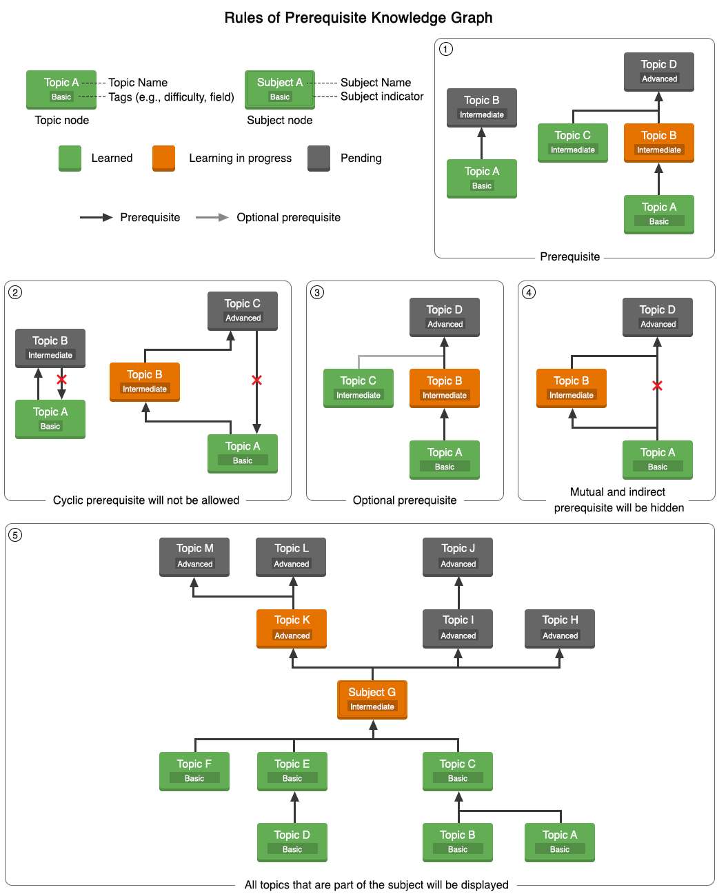

I finally have a completed MVP after some grinding. Since the previous dev blog, many things have changed—from the interface and features to the way the prerequisite graph is structured. So let’s see how the MVP currently looks.
First, let’s go through how the prerequisite knowledge graph (PKG) has changed. In case you don’t know what a prerequisite knowledge graph (PKG) is, feel free to check out the previous post to understand the concept. As the name suggests, it is a knowledge graph where nodes (knowledge, topics, concepts) are connected via prerequisite relationships. You can think of it as a tech tree in a game, but for knowledge.
The graph’s architecture has been updated since then. Now, the graph has two types of nodes: topic nodes and subject nodes.
The subject node is implemented but does not yet display all its child nodes because the number of nodes can be overwhelming. For example, a subject like physics contains many topics, and displaying all of them at once can be overwhelming to user and computationally heavy. Methods to manage and display them efficiently are still under development. You can see the properties and rules of PKG in the figure below.
 Rules of Prerequisite Knowledge GraphTopics/subjects have different states:
To prove users have mastered a topic or subject, they must complete a test for topic nodes and master all topic nodes under a subject node to master the subject itself.
I have also planned out new edge types. In addition to prerequisites, I am planning to add ‘optional prerequisites’, which are not required to advance but can greatly help in understanding a topic, and ‘part of’ edges, which define topics as components of a subject.
To maintain consistency, I have imposed some general rules when constructing the graph.
Currently, the PKG content focuses mostly on AI and a bit of math, which is subjects I know a little bit of and can validate. In the previous post, I mentioned that “this project can potentially encapsulate all human knowledge.” Welp, I take that back. I realized that not all topics require prerequisite knowledge, for example, subject like history, so they aren’t suitable for mastery learning. However, STEM subjects heavily rely on prerequisites, so building a PKG that focuses on STEM has become my priority.
There are still many concerns to address. For example:
I am not an expert in pedagogy, I am just a software developer with a preference for this kind of learning method. If anyone has ideas on improving PKG structure and definition, feel free to reach out for discussion.
Of course, we have an interface to allow users to access the PKG (visit the website here). Honestly, it is far from being fully usable. However, I can’t wait to let people try it out, so I decided to roll it out as soon as possible. The previous MVP only supported guest mode. Now, users can log in to track their learning progress, take tests for validation, and follow specific graphs of interest.
One of my favorite features is the dashboard and My Tree function. The My Tree section displays all the topics you’ve learned, visually representing your knowledge growth like a tree (good luck growing your own knowledge tree!).
I have planned to implement gamification, but that will have to wait for the next phase. For now, there is a simple leveling system, where you earn experience by completing training and trials. As for what levels will be used for, I’m still thinking about it.
That’s it for this dev blog. There is still a long way to go, e.g. gamifying of the learning process, creating a graph editor for collaborative topic and prerequisite contributions, and even allowing users to build their own private PKGs.
PKG and Takomori still have a long journey ahead. Yet, I’m excited about the progress so far and excited to see how this tool can improve learning experiences. If you are interested in this approach or want to help build the PKG, please contact me or join our community Discord.